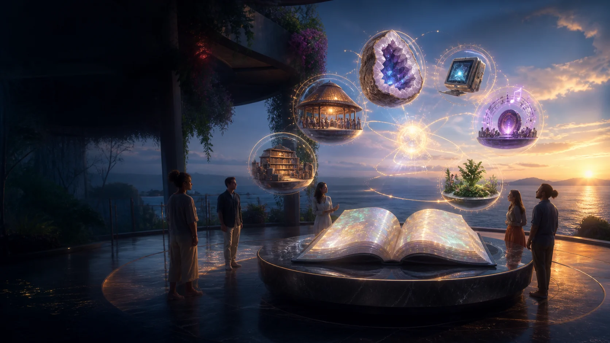

An open book.
Many worlds in orbit.
Oceania Healthy De-Slop Co-ops is a regional public working project by Luke Nathan Hayes. It gathers health, co-operative, local-compute, music and civic ideas while leaving room for specialist sites and locally shaped agreements.
Imagined concept artwork
A regional doorway with room to grow
The project explores how beautiful shared infrastructure, private reflection and local computing might gather around each person's dignity. A co-operative offers one possible ownership relationship among many locally shaped paths.
This public working project gathers proposals and sources. Local groups, clinics, product teams and regional partnerships would bring their own names, decisions and records as those relationships take shape.
Public working projectThe connected public project family
Each world holds its own purpose, evidence and development history.
This gateway is designed to branch
The regional site holds the shared story. Topics with deep evidence, specialist tools, local governance or substantial media receive their own sites and repositories.
Public project world
Published proposals, source notes, design questions, public submissions, lyrics, artwork, code and release history.
Personal and relationship-held world
Health records, private reflections, digital-twin files, cultural knowledge, consent records and information held through a specific care or community relationship.
A strange but true licence from the outset
Original project material is shared under the Strange But True Public Source Licence. Personal, educational, artistic, research, community and other non-commercial exploration is welcomed with attribution. Commercial rights remain reserved to Luke Nathan Hayes.
The licence text itself remains the reference for its full terms.
Credits and contact
Concept, source material, lyrics and project direction: Luke Nathan Hayes. Website structure, visual system, code and generated concept artwork were developed collaboratively with OpenAI Codex. Full image prompts and preserved originals are kept in the repository.